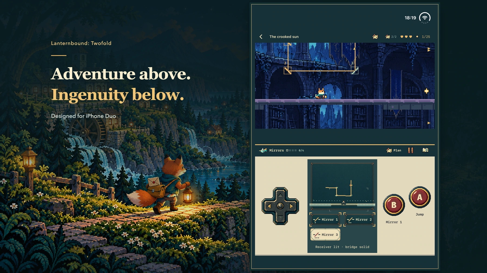

An adventure for iPhone Duo
Two screens. Twelve ways home.
Carry twelve letters through a forgotten valley. Let your lantern uncover the route—and the lives waiting at its end.
See how it plays
Promotional artwork; see actual gameplay below.
Every letter opens a way.
A storm broke the roads. The new map left some homes behind. As a young fox courier, carry messages between neighbors—and one private letter to the mentor who stopped replying. Each delivery leads to the next. Deliver all twelve main-route letters to reach the complete ending, then return to see what has changed.

iPhone Duo
Adventure above. Your next move below.
The world fills the upper play area. Your map, instruments and familiar controls sit below. Use the inner display with the world above the controls; supported flat layouts retain the same arrangement.
- Move with the D-pad. Jump with A. Use your current instrument with B.
- Open Plan to pause and study the route. Inspect the map before returning to live play.
- Prepare a mechanism below, then make the jump above. Your planning changes the path you can take.
Take the less obvious path.
Follow moth marks into a dark passage. Climb toward an upper route. Look for a lower tunnel, a hidden room, or a return path you missed the first time. Each chapter has two optional keepsakes with small stories of their own.


One tool teaches you. Two make you think.
Light reveals a path. A boomerang rings a bell. Freeze a moving platform, turn a mirror, leave an echo on a switch. Each chapter reuses its instrument across four main challenges, then asks you to relay actions between a specified pair of tools. Some side paths change their order.


In preparation · Not submitted or available to buy yet
A complete adventure. One purchase.
Planned as a Duo-exclusive paid edition. One purchase includes all twelve chapters, with no ads, subscriptions or in-app purchases. Planned US price: $9.99; final local prices and availability will appear on the official App Store page.